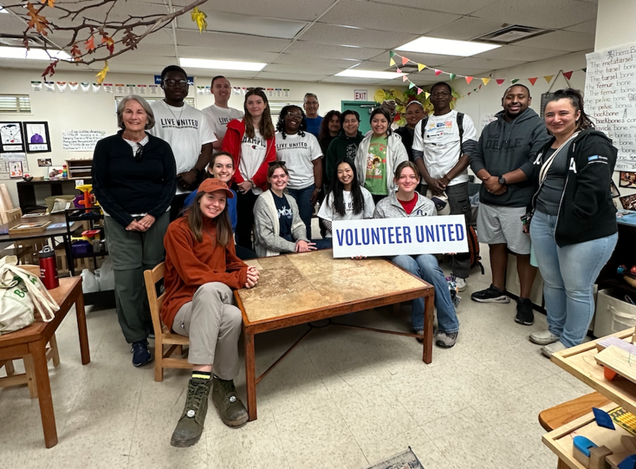
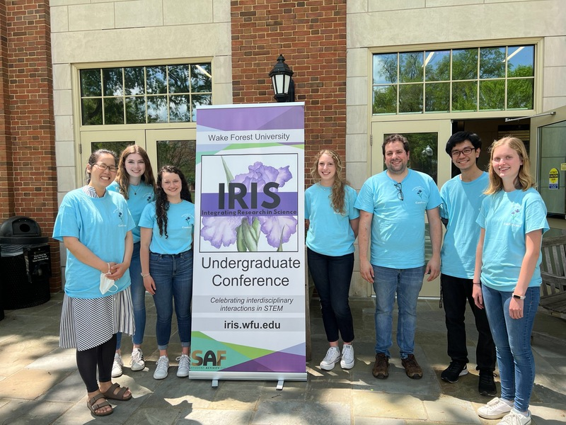

University Fellows Program
At the University of Arizona, I am part of the University Fellows Program, a diverse cohort of PhD students from graduate programs across campus. In this program, I engage in mentoring, professional development activities, and community service.
IRIS Conference at Wake Forest University
At Wake Forest, I was the lead organizer for the annual Integrating Research in Science Conference, which brought together 70+ undergraduates from 7 different universities in North Carolina to listen to student research presentations and recieve feedback on their work from faculty. I helped organize the conference with student volunteers from Wake Forest and Elon University beginning in 2021 and was the lead organizer in 2024.
